Open the Study Hub login, enter your approved UNE email, and this note will unlock automatically.
Why a surgeon lectures on lymphatics: because most of the damage is ours. A groin dissection that produces a heavy leg, a left internal jugular line that fills a chest with chyle, and a spleen that — once removed — leaves a patient who can die in six hours from an organism their vaccine would have stopped.
How to use this file
Dr. Ciraulo opened by answering the obvious question: why is a surgeon lecturing on the lymphatic system? His answer was that surgeons spend a great deal of time with it — partly because of the complications that occur from other people trying to intervene in it. The spleen is the organ we operate on; the thoracic duct and the groin lymphatics are the structures we injure.
“I think there’s about six or so questions on the surgery side. So it’s very minor that you have compared to all the other stuff you have.” He also repeatedly said he draws his questions from board review books and board exams, and that his goal is “for nobody to miss any of my questions.” Where he flagged something as a board question, this file marks it.
These notes are built from three sources: the slide deck, the recorded lecture, and a live Zoom question-and-answer session. Two things you should know:
There are also several genuine conflicts between the slides and what was said aloud — including one inverted definition that would cost you a board question. These are collected and resolved in Conflicts in the Source Material. Read that section before the exam.
Bottom-left 🧰 Study menu: Recall mode hides every bolded fact so you can quiz yourself; Next question walks the exam questions. Section headers carry a Reviewed button and a confidence traffic light that persists between visits. Every table has a 🧩 Quiz this table bar. Keyboard: J/K sections, Q next question, R reveal, Esc close.
The lymphatic system
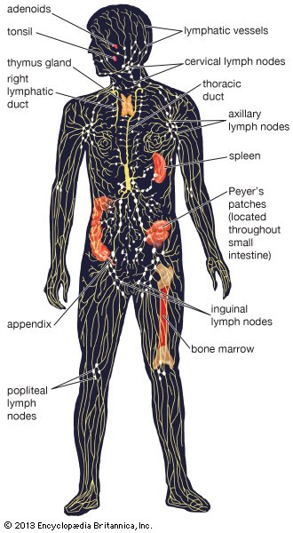
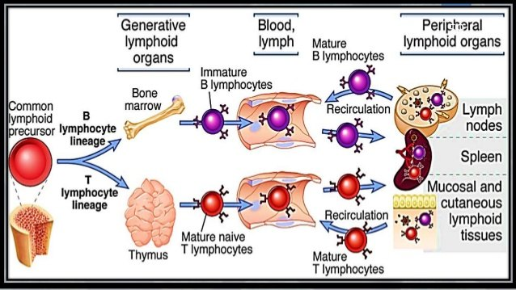
Pressure within lymph vessel walls is LOWER than in blood vessels, and lymph flows more slowly than blood. Lymphatic vessels have valves and behave much like veins; when those valves are damaged or inflamed, flow fails.
Lymphatic vessel walls are MORE permeable than blood capillary walls. This is why they can admit what capillaries cannot.
Proteins too large to re-enter the capillaries — along with waste products and large proteins synthesized in local tissue cells — enter the lymphatic vessels for return to the bloodstream. Lymphatic fluid is therefore very heavy in protein.
The thoracic duct is only about 2–3 mm; peripheral lymphatic vessels are the width of pencil lead. In his words, “you can’t really sew pencil lead” — which is why there is no good surgical option for lymphatic injury.
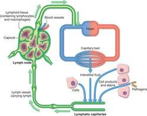
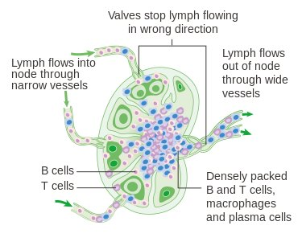
The slide states it plainly: the primary function of the lymphatic system is to return proteins and fluids to the blood. Immune function is real but secondary in this framing. As he put it: yes, it fights bacteria and allergens — but when the system goes awry and we cannot get proteins out of the interstitial space back into the circulation, that is when complications set up.
Node enlargement follows the same logic: bacteria, allergenic particles and cancerous cells collected in the nodes stimulate lymphocyte proliferation, greatly enlarging the node. And interference with lymphatic flow causes accumulation of fluid in the tissues drained by the blocked vessel → lymphedema.
Q: Why does obstruction of a lymphatic vessel produce such marked, persistent tissue swelling, when obstruction of a small vein often does not?
Because lymph is protein-rich. Lymphatic capillaries are more permeable than blood capillaries and therefore admit large proteins that cannot re-enter the venous capillaries at all. When the lymphatic route is blocked, those proteins have no alternative drainage path and accumulate in the interstitium, raising oncotic pressure and drawing water with them. Venous obstruction, by contrast, raises hydrostatic pressure but leaves the protein-clearing route intact.
Q: A patient discharged after a severe leg injury returns with a swollen, red, hot leg and a wound draining clear fluid. What is the diagnosis?
Injury to a lymphatic vessel with a lymphatic leak. Dr. Ciraulo described exactly this patient: “He’s got a big swollen leg, it’s red, it’s hot, it’s nasty and his wound is draining clear fluid. He’s got an injury to a lymphatic vessel. It’s that simple.” The clear drainage is the discriminator — this is lymph, not pus, and the erythema and warmth reflect the acute phase of lymphedema rather than infection.
The lymphatic system
This section carries the single most emphatic practical instruction of the entire lecture. He repeated it three times and asked the class to raise their hands and take an oath.
Anatomy: the thoracic duct enters at the posterior wall of the internal jugular vein at the confluence of the left subclavian and left internal jugular veins. It is 2–3 mm across.
Mechanism of injury, exactly as he described it: you place the needle, pass the wire, and believe you are in the vein — but you may be in the thoracic duct. You then pass the dilator, which is what does the damage. The line will not thread properly, so you pull everything and try again, succeed on the second pass, and the chest radiograph shows no pneumothorax, so all seems well. The next morning the film is white.
Why it is so hard to fix: repair requires entering the left chest and working at the apex of the lung — he described having to almost hang upside down to see it, sometimes needing a counter-incision — and roughly 90% of the time nothing can be done. The maneuver of last resort is having anesthesia instill high-fat feeds (he uses ice cream down the nasogastric tube) to increase chyle flow and make the leak visible enough to place a stitch. Usually the duct is simply ligated, relying on the right-sided duct to compensate.
Consequences: chylothorax (leak of lymph into the left chest) and chylous ascites. He deals with one to two chylothoraces a year, “and it’s always because somebody put a central line into the left internal jugular vein and nailed the thoracic duct.”
Use instead: the right internal jugular, a subclavian, or a femoral vein.
Q: A resident places a left internal jugular central line. The immediate post-procedure chest radiograph shows no pneumothorax and correct catheter position. The following morning the left hemithorax is opacified. What has happened, and why did the first film look normal?
Thoracic duct injury with chylothorax. The duct enters the posterior wall at the confluence of the left subclavian and left internal jugular veins, directly in the needle’s path. The first film was normal because chyle accumulates over hours — flow depends on lymphatic return, which is slow, and increases substantially only once the patient is fed. The correct lesson is preventive: do not place a left internal jugular line; use the right internal jugular, subclavian, or femoral vein.
Q: Why is a right lymphatic duct injury far less clinically significant than a thoracic duct injury?
Because the right lymphatic duct is smaller and drains only the right upper body, whereas the thoracic duct is the major duct draining essentially everything else — the entire lower body, abdomen, left thorax, left arm and left head and neck. The volume of chyle lost after a thoracic duct injury is therefore far greater. Conveniently, this asymmetry also means the right-sided duct can compensate to some degree when the thoracic duct must be ligated.
The lymphatic system
Lymphedema ensues if the production of lymph exceeds the maximal transport capacity of the lymphatic conduits. Accumulation of protein and cellular metabolites in the extracellular space generates water accumulation, collagen deposition, and elevated interstitial pressure. The collagen deposition is why chronic lymphedema becomes firm and fibrotic rather than remaining soft and pitting.
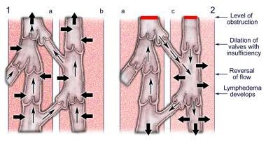
Skin is pink or red with a mildly elevated temperature. Easily mistaken for cellulitis or deep vein thrombosis.
Pain: aching or heaviness of the limb. Severe pain is rare — a useful discriminator against infection and acute ischemia.
Thickened skin with areas of hyperkeratosis, lichenification, and development of peau d’orange.
Progressive fibrosis from collagen deposition. In the breast cancer context he described it as disfiguring and debilitating, requiring sequential wrapping and special garments.
Edema extends to the distal aspects of the feet, resulting in “SQUARE TOES” — the Stemmer sign (sometimes Kaposi-Stemmer sign).
The formal definition: loss of cutaneous elasticity with an INABILITY TO TENT the skin of the interdigital web space. As he explained it at the bedside: with ordinary edema you can usually pinch it; with lymphedema the skin is firm and tough and cannot be pinched, despite obvious swelling.
He said you will see this: “You will see that sometime in your life, you 100% will. Lymphedema’s pretty common.”
Note on the name: the recording renders this as “steamer sign” throughout. The correct spelling is Stemmer.
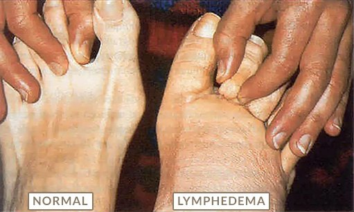
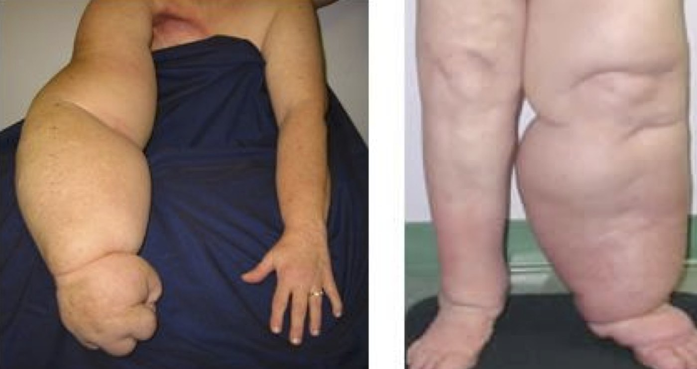
| Type | Subtype | Defining feature |
|---|---|---|
| Primary lymphedema Females affected 2- to 10-fold more often than males. Classified by genetics (familial vs sporadic) and time of onset | Congenital | Onset before age 1 year |
| Lymphedema praecox | Onset age 1 to 35 years | |
| Lymphedema tarda | Onset after age 35 years | |
| Secondary lymphedema The most common form of lymphatic disease — more common than primary | Developed countries | IATROGENIC — lymphatic trauma or dissection · cancer or radiotherapy for cancer · also large burns, pregnancy, and bacterial and fungal infections |
| Developing countries | FILARIASIS — parasitic infestation with Wuchereria bancrofti, the most frequent cause worldwide (elephantiasis) |
Case 1 — the United States. A patient presents with a swollen, painful, heavy UNILATERAL leg. History reveals a hernia repair or kidney transplant 6–8 weeks ago — both approached through the groin, where the lymphatics run. (Kidney transplant is a retroperitoneal approach above the inguinal ligament.) There is pitting edema, erythema, warmth, pain.
First thought must be deep vein thrombosis — “because DVTs are deadly” — so you obtain an ultrasound. It is negative. Then, on examination, you notice square toes and a positive Stemmer sign → iatrogenic lymphedema from surgical injury to the groin lymphatics.
Note the deliberate rule-out: unilateral is doing real work here. He pointed out that heart failure gives bilateral lower extremity edema, so a unilateral heavy leg is not heart failure.
Case 2 — overseas. A woman from the Philippines with a swollen, painful arm and swollen, painful breast, unilateral. Everyone fears malignancy; you obtain a mammogram and it shows no malignancy. The answer is filariasis.
The prognostic difference matters: “the parasitic one is actually easier to treat, because you give medication. The surgical damage one, you’re not going to probably reverse.”
He paused to make a professional point: there is a phrase in surgery that if you are operating somewhere in the body and something bad happens, it is your fault, and you need to identify the problem. Applied here: a patient with a swollen leg weeks after your groin operation deserves an honest consideration that “maybe I messed up the lymphatics.”
Clinical presentation, history and physical findings. Examination: inspect for cutaneous and subcutaneous fibrosis, peau d’orange, and Stemmer sign.
Reliable and reproducible. A radiolabeled macromolecular tracer is injected into one of the interdigital spaces of the affected limb and its transit imaged.
Elevation, therapeutic exercise, manual massage, and compression therapy (wraps, pumps, garments).
Should be considered only after a trial of conservative therapy. He was frank that heroic attempts — such as sewing an opened vein onto a lymph node to drain lymph — do not pan out well.
Skin hygiene, clothing precautions, trauma avoidance, and infection control.
Infection, malnutrition, immunodeficiency, and malignancy — specifically LYMPHANGIOSARCOMA.
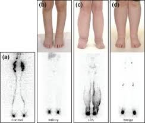
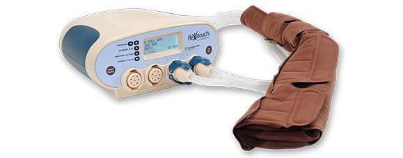
Q: A 54-year-old woman has a heavy, aching, swollen right leg that began 6 weeks after an inguinal hernia repair. Duplex ultrasonography shows no deep vein thrombosis. The skin of the second interdigital web space cannot be tented. What is the diagnosis and the underlying cause?
Secondary lymphedema from iatrogenic injury to the groin lymphatics. The inability to tent the interdigital web space is a positive Stemmer sign (square toes). Unilateral involvement excludes heart failure, which gives bilateral edema; the negative ultrasound excludes deep vein thrombosis. In developed countries the leading cause of secondary lymphedema is iatrogenic — lymphatic trauma or dissection. Treatment is conservative: elevation, exercise, manual massage, compression, and it is unlikely to reverse.
Q: A 40-year-old woman who emigrated from the Philippines has a unilateral swollen, painful arm and breast. Mammography shows no malignancy. What is the most likely cause and the causative organism?
Filariasis — the most frequent cause of secondary lymphedema worldwide, producing elephantiasis. The organism named on the slide is Wuchereria bancrofti. It is waterborne and typically enters through skin invasion or injury, destroying the lymphatic system. Importantly, unlike surgical lymphedema, the parasitic form is treatable with medication and may be reversible.
Q: Distinguish the acute from the chronic skin findings of lymphedema, and name the malignancy that can arise in a chronically lymphedematous limb.
Acute: pink or red skin with mildly elevated temperature. Chronic: thickened skin with hyperkeratosis, lichenification, and peau d’orange, reflecting progressive collagen deposition and fibrosis. In both, pain is typically only aching or heaviness — severe pain is rare. The malignant complication is lymphangiosarcoma; other complications are infection, malnutrition and immunodeficiency.
Lymphoid organs
It all starts with the bone marrow. Precursor cells emerge into the bloodstream. B cells mature primarily in the lymph nodes; T cells get their activation and signalling through thymic tissue. The final destinations are the lymph nodes, the spleen, and the mucosal tissues — and it is those end organs that surgeons have to address.
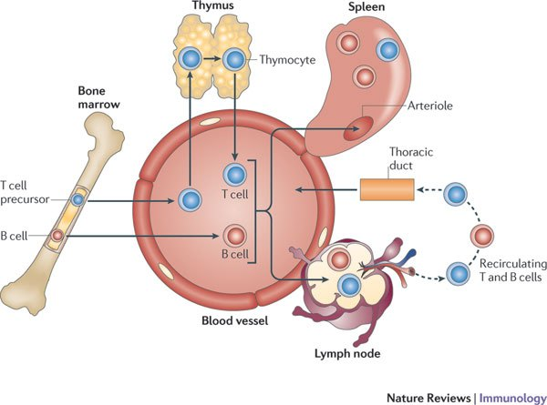
A soft, roughly triangular organ in the mediastinum, anterior and superior to the heart and posterior to the sternum. Two distinct but identical lobes, each with a superficial cortex and a deep medulla.
Epithelial tissues and lymphatic tissues containing dendritic cells and macrophages.
Secretes hormones and cytokines regulating T-cell maturation: thymulin, thymopoietin, and thymosins.
The thymus enlarges throughout childhood but slowly shrinks from the onset of puberty, being replaced by adipose tissue — because the immune system produces most of its T cells during childhood and requires very few new ones after puberty.
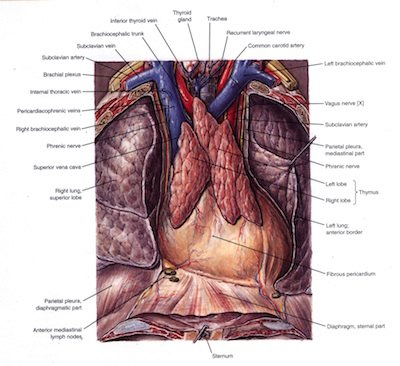
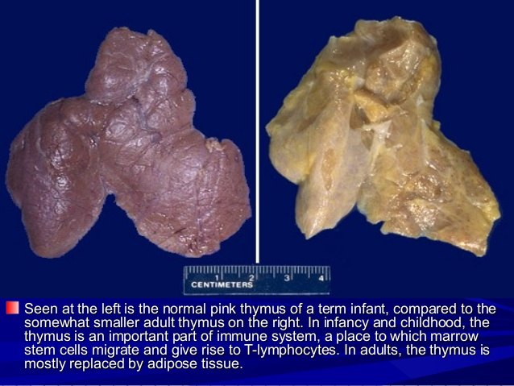
The thymus receives immature T cells produced in the red bone marrow and trains them into functional, mature T cells that attack only foreign cells.
The slide names this process POSITIVE SELECTION. Learn it as the deck states it, since that is what the course will test.
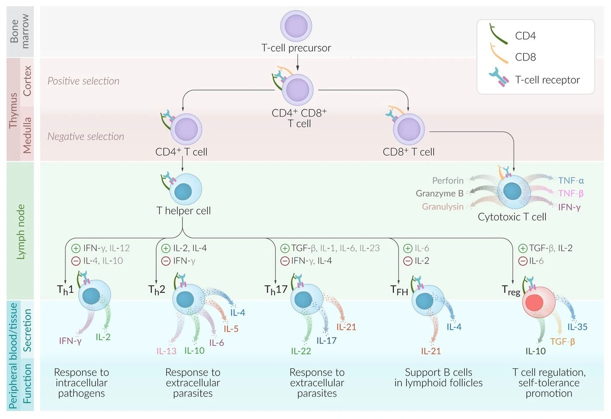
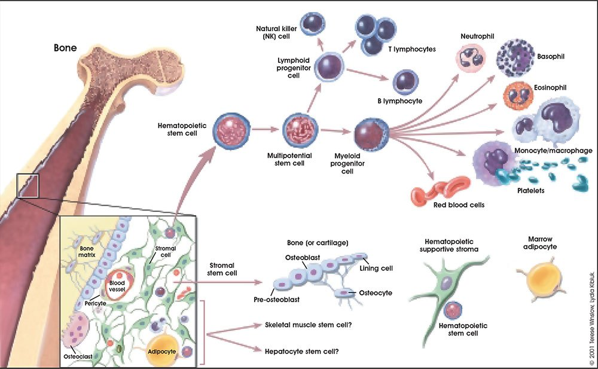
He returned to this idea repeatedly. In young children, gut and mucosal lymphoid tissue (Peyer’s patches, tonsils, appendix) and the thymus carry enormous immunological weight. As we get older, that responsibility shifts toward the bone marrow and other parts of the lymphatic system.
This is why the same operation carries different risk at different ages: an ileocecal resection or a tonsillectomy in a small child removes a meaningful fraction of their immune capacity, while in an adult it does not. It is also why splenectomy is deferred past early childhood whenever possible, and why tonsillectomy is now rare and generally deferred to about age 12 or older.
Q: Where do immature T cells first encounter antigen-presenting cells in the thymus, and what happens to those that fail to respond?
They first reside in the CORTEX, where they contact antigen-presenting epithelial cells. Those that respond are selected to survive, mature, and migrate to the MEDULLA. Non-responders die by apoptosis and are cleared by macrophages. The slide calls this positive selection.
Q: Why does the thymus involute after puberty without producing immunodeficiency?
Because the immune system produces most of its T cells during childhood and requires very few new T cells after puberty. The thymus enlarges through childhood, then shrinks from the onset of puberty and is replaced by adipose tissue. The existing mature and memory T-cell pool — maintained in part by the bone marrow, which preferentially accumulates central memory CD8+ T cells — carries immune function forward.
Lymphoid organs
He was explicit about why this appears in a surgery lecture: “MALT and GALT are important because we do tonsils, and we do appendectomies, and we do cecal resections.” Surgeons remove this tissue, so surgeons need to know what it does.
Major function: generation and dissemination of antigen-sensitized B cells, which require presentation to antibody-producing plasma cells in various secretory tissues.
Small masses of lymphatic tissue found throughout the ILEUM of the small intestine. Histologically roughly egg-shaped lymphatic nodules, similar to lymph nodes except NOT surrounded by a connective tissue capsule — i.e. non-encapsulated lymphatic tissue, a category that also includes the tonsils and the lymphatic tissue of the appendix.
Specialized microfold (M) cells line the side of the patch facing the intestinal lumen; the outer side contains many lymphoid cells and lymphatic vessels.
Predominantly IgA antibodies — called “MUCOSAL ANTISEPTIC PAINT.”
Monitor intestinal bacterial populations and prevent the growth of pathogenic bacteria in the intestines, analyzing and responding to microbes in the ileum.
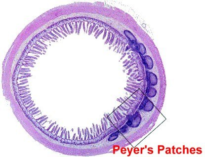
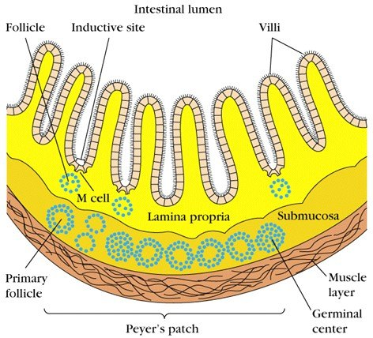
He introduced this as a genuine board question he had seen (he attributed it to TrueLearn and to a recommended surgical board review book), and he drilled it hard: “Mucosal paint, you’re never gonna forget that. You’re gonna dream about mucosal paint tonight.”
The chain to memorize: Peyer’s patches → ileum / ileocecal region → IgA → “mucosal antiseptic paint” → coats the bowel → prevents bacterial invasion of the mucosa.
The surgical consequence: a child who undergoes ileocecal resection — classically for necrotizing enterocolitis, which he described as a necrotic, liquefying infection leaving bowel “black, gray nastiness” — loses the major site of IgA production and is therefore at risk for gastrointestinal sources of sepsis from bacterial translocation across an unprotected mucosa.
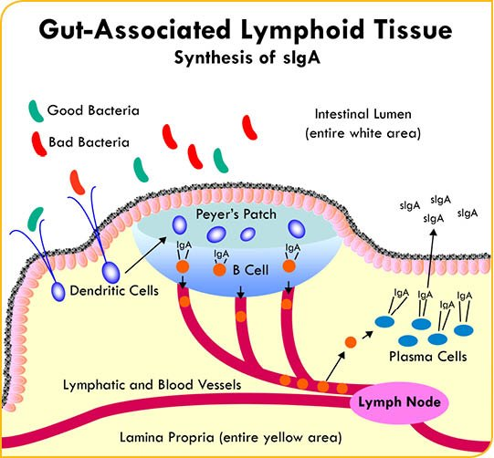
A student asked whether this is the same as selective IgA deficiency. Dr. Ciraulo answered “I don’t know” — explicitly modelling that admitting uncertainty is correct — and the class looked it up in real time.
They are different. Selective IgA deficiency is the most common primary immunodeficiency, an inherited failure to produce IgA. As the class found: it causes recurrent respiratory and gastrointestinal infections, but is often asymptomatic and discovered incidentally, and is associated with autoimmune disease and allergies. (Board-relevant addition not raised in class: these patients are at risk of anaphylactic transfusion reactions to IgA-containing blood products.)
Surgical IgA loss after ileocecal resection is by contrast an acquired, local deficit of mucosal IgA production. The final common pathway — a less-protected mucosal barrier — is genuinely similar, which is why the question was a good one.
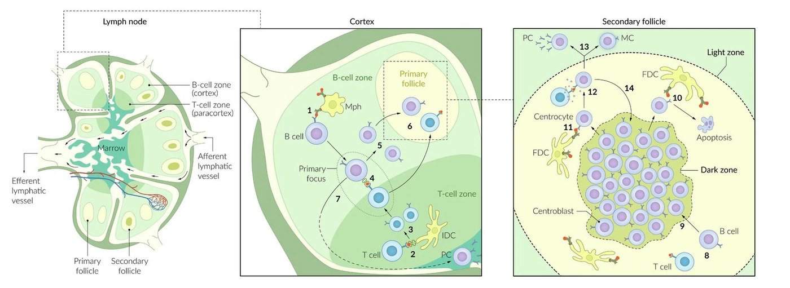
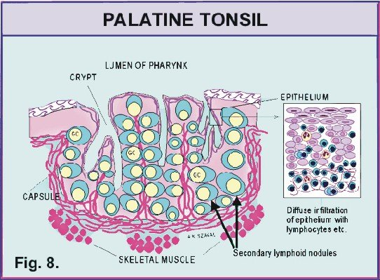
Q: A 6-week-old infant undergoes ileocecal resection for necrotizing enterocolitis. Which immunoglobulin is most reduced, and what is the clinical consequence?
IgA — the “mucosal antiseptic paint” produced by Peyer’s patches, which are concentrated in the ileum and ileocecal region. Losing that tissue removes the major site of IgA production, leaving the intestinal mucosa vulnerable to bacterial invasion and placing the infant at risk for gastrointestinal sources of sepsis through translocation.
Q: How do tonsils differ structurally from lymph nodes in the way they encounter antigen, and which immunoglobulin predominates in each of tonsils and Peyer’s patches?
Tonsils are directly and continually exposed to antigen at the gateway of the respiratory and alimentary tracts, whereas lymph nodes receive antigen via the bloodstream. Tonsils are also non-encapsulated, unlike lymph nodes. Tonsils: predominantly IgG, less IgE. Peyer’s patches: predominantly IgA.
Q: What are M cells and where are they located?
Microfold (M) cells are specialized epithelial cells that sample antigen from the lumen by endocytosis and pass it to underlying lymphoid tissue. In Peyer’s patches they line the surface facing the intestinal lumen. Analogous micropore (M) cells with a tubulovesicular transport system sit at the base of the tonsillar crypts. They are the entry gate of mucosal immunity.
The spleen
The spleen is the LARGEST secondary lymphoid organ, in the left upper quadrant, below the diaphragm, protected by ribs 8 through 11.
The clinical corollary he stressed: a patient with fractures of ribs 8–11 on the left plus abdominal pain should worry you, because there is a very high correlation between splenic injury and fractured ribs in that region.
| Direction | Structure | Why it matters |
|---|---|---|
| Posteriorly | Left kidney | Retroperitoneal neighbour |
| Superiorly | Diaphragm | Explains referred left shoulder pain and left pleural effusion after splenectomy |
| Anteriorly | Fundus of the stomach and the splenic flexure of the colon | Sources of the gastric wall and colonic injuries listed among splenectomy complications |
| Medially | Tail of the pancreas | The most important one. Its proximity to the hilum is why the pancreas “gets hurt a lot” and why blind clamping causes pancreatic leak |
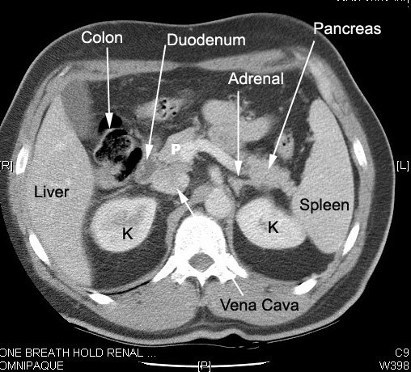
Carries the short gastric vessels.
Divided during mobilization.
Divided during mobilization.
Textbooks call this an avascular plane. See the warning below.
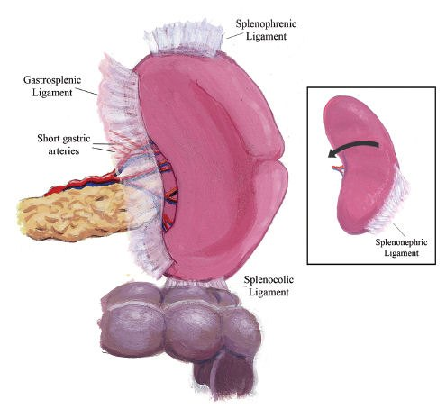
On the splenocolic ligament, he was emphatic and funny: the textbooks say avascular, “don’t worry about it” — “It bleeds every damn time. There is no avascular plane. There’s a vessel in there, I should name it after myself.”
The practical points about the ligaments: they are very friable and soft, so mobilization is largely blunt — you reach behind the spleen and the attachments tear, with scissors for what does not. The older the patient, the more easily they come up. And helpfully, in splenomegaly or after trauma the body has already stretched and mobilized these ligaments, moving them out of the way.
Why spleens bleed so profusely: it is “a direct shot basically off the aorta.” Note there are two blood supplies — splenic artery and short gastrics.
This single relationship generates two diseases: pancreatic inflammation thromboses the vein behind it, and portal vein thrombosis backs pressure up into the spleen. Both are covered in Topic 8.
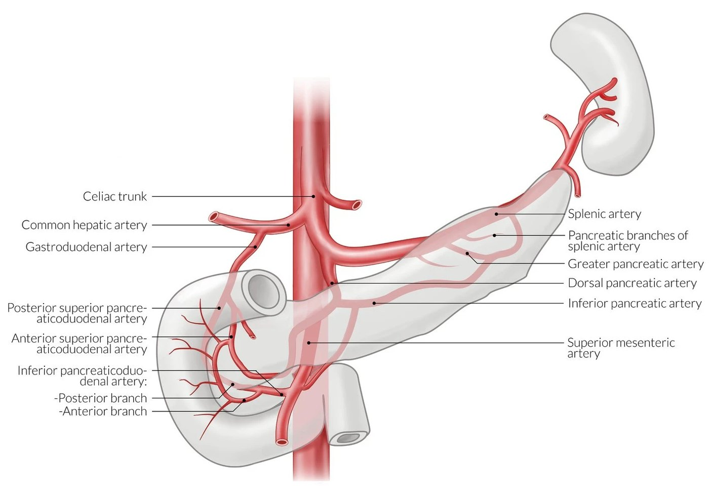
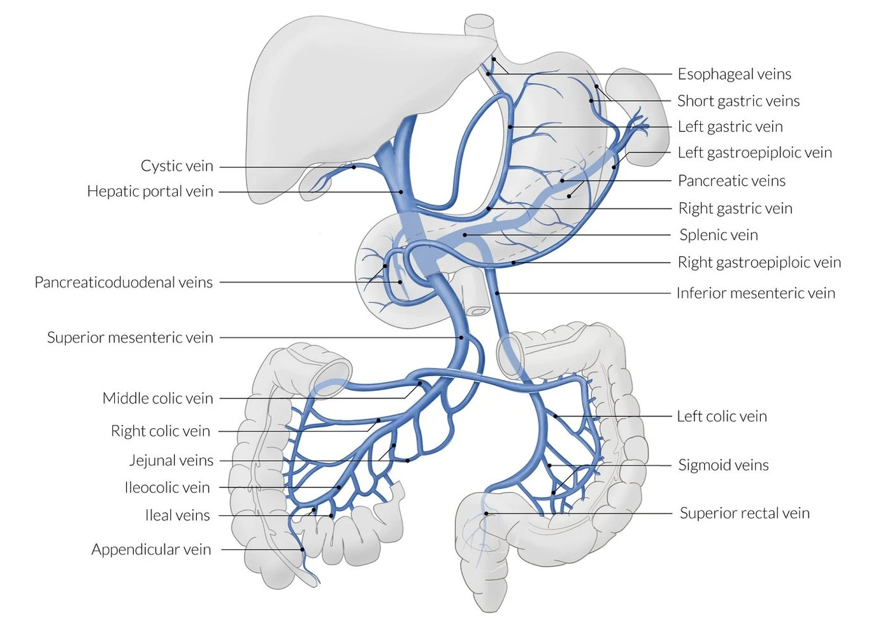
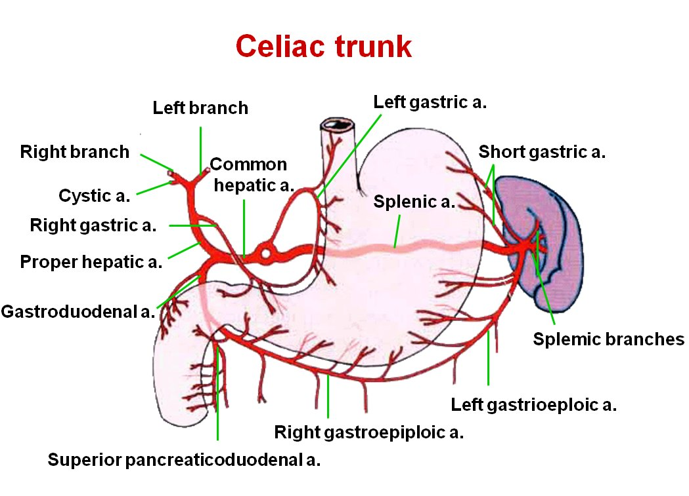
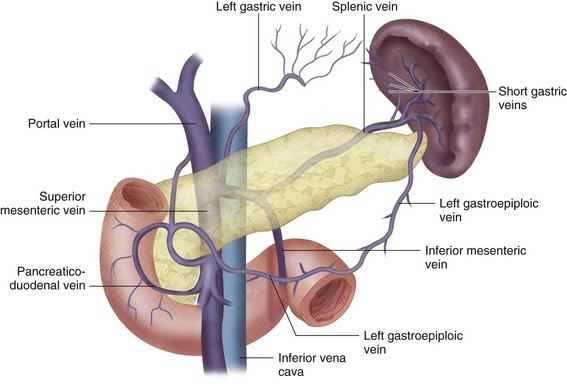
The artery runs along the superior border of the pancreas; the vein runs along the inferior border, behind it. He drew the clinical consequence directly: “it takes a lot to compress the splenic artery, but it doesn’t take a lot to compress the splenic vein.” A pancreatic pseudocyst or inflamed pancreas therefore thromboses the low-pressure vein long before it troubles the artery — which is exactly why splenic vein thrombosis is a recognized complication of pancreatitis and splenic artery thrombosis is not.
| Zone | Contents | Primary function |
|---|---|---|
| White pulp | Lymphocytes, macrophages, and plasma cells | Immunologic |
| Marginal zone | Vascular space between the pulps containing macrophages; also B cells that can generate antibodies | Interface / antibody generation |
| Red pulp | 75% of splenic volume; cords of reticular cells with sinuses | Primary blood FILTER; recycles iron |
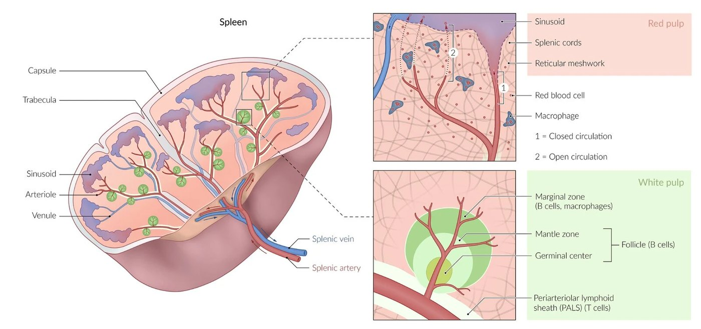
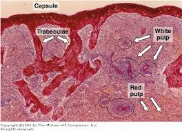
The capsule is dense connective tissue, and septations (trabeculae) subdivide the pulp into these three zones. His shorthand for the red pulp: “75% of the spleen is basically an oil filter in your car.”
Q: A patient in a motor vehicle collision has fractures of the left 9th and 10th ribs and left upper quadrant tenderness. What injury must be excluded, and what imaging is used first?
Splenic injury. The spleen lies in the left upper quadrant protected by ribs 8–11, and there is a very high correlation between splenic injury and fractures of those ribs. Ultrasound is usually the first choice in trauma scenarios, assessing splenic size and texture and looking for perisplenic fluid; CT then defines size, structural abnormality and associated pathology in the stable patient.
Q: During splenectomy, a clamp is applied blindly to the splenic hilum. What structure is most likely injured, and what complication follows?
The tail of the pancreas, which lies medially, immediately adjacent to the splenic hilum. The complication is a pancreatic leak. The slide states the warning directly: blindly applying a clamp to the splenic hilum may injure the pancreatic tail, which is why step 2 of the operation is careful dissection of the hilum before any vascular clamp is applied.
Q: Trace the venous drainage of the spleen and explain why portal vein thrombosis causes splenomegaly.
The splenic vein runs along the lower border of the pancreas and merges with the superior mesenteric vein to form the portal vein. Because the spleen’s only venous outflow passes through the portal system, portal vein thrombosis obstructs that outflow → blood backs up → the spleen becomes congested and enlarges. As he put it: “it’s gonna back up and grow really big.” Note that splenectomy does not help, because the thrombosis remains.
The spleen
Removes foreign materials, cellular debris, and damaged erythrocytes from the circulation. His repeated metaphor: the spleen is the body’s garbage disposal — where used-up white cells carrying antigen, and fragmented red cells and platelets, get chewed up.
Removes bacteria from blood, including POORLY OPSONIZED or ENCAPSULATED pathogens. Serves as a site for antigen presentation and T-cell and B-cell activation, and is the major site of IgM production.
Of minor capacity, the spleen serves as a reservoir for platelets and red blood cells.
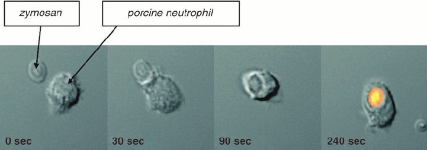
He defined it during the Q&A: opsonization is the process of coating an organism so that it can be recognized and destroyed. His framing was that it breaches the capsule so the organism can be attacked.
Encapsulated bacteria are the problem because their polysaccharide capsule hides them from ordinary phagocytosis. They must first be opsonized by antibody — principally IgM, which the spleen is the major site of producing — and complement, after which splenic macrophages can clear them.
Remove the spleen and you lose both halves of that system at once: the major source of IgM and the filtration bed that removes the opsonized organisms. That is the mechanism of overwhelming post-splenectomy sepsis in Topic 12.
A precision note: in the recording he described opsonization as breaking down the capsule so that antibiotics can get in. Strictly, opsonization tags the organism for phagocytosis — it does not degrade the capsule or admit antibiotics. The clinical conclusion he drew is entirely correct; the mechanism is worth stating precisely for an exam.
Q: Which immunoglobulin is the spleen the major site of producing, and why does its loss specifically endanger a patient against encapsulated organisms?
IgM. Encapsulated bacteria resist ordinary phagocytosis because their polysaccharide capsule conceals them; they must first be opsonized by antibody and complement before macrophages can clear them. Splenectomy removes both the major source of IgM and the filtration bed where opsonized organisms are removed — so the patient loses the ability to clear Streptococcus pneumoniae, Neisseria meningitidis and Haemophilus influenzae.
Q: Which part of the spleen constitutes most of its volume, and what does it do?
The RED PULP — 75% of splenic volume, consisting of cords of reticular cells with sinuses. It is the primary blood filter and recycles iron. The white pulp (lymphocytes, macrophages, plasma cells) is immunologic, and the marginal zone between them holds macrophages and antibody-generating B cells.
The spleen
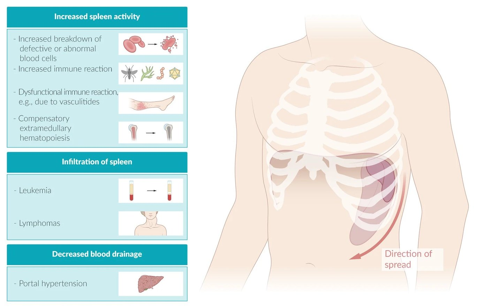
| Deficiency | Clinical manifestation |
|---|---|
| Anemia | Pallor, fatigue, dyspnea |
| Leukopenia | Recurrent infections |
| Thrombocytopenia | Bruising and epistaxis |
| Splenomegaly itself | Pain from capsular distention; may present with rupture and hemorrhage |
Splenic parenchyma is insensate; the capsule is what hurts. So splenic pain is a mechanical signal that the organ is being stretched — and, per his teaching, a stretched capsule in an already-friable spleen means rupture risk. He used this as a threshold for intervening even when the underlying disease is not itself a splenectomy indication: “if someone has portal hypertension, stretching, capsule pain, you might want to think about doing something.”
The MOST COMMON cause of secondary hypersplenism.
Often accompanied by congestion and splenomegaly.
Treatment: splenectomy is generally NOT indicated. The spleen is an innocent bystander — removing it does not address the portal obstruction. As he said, “you don’t make them any better taking the spleen out, because the thrombosis is still the thrombosis.”
Exception to consider: a spleen that becomes so large and friable that capsular pain and rupture risk dominate.
Pancreatic pathology (pancreatitis) is the most common cause.
Classically presents with UPPER GASTROINTESTINAL BLEEDING due to associated GASTRIC VARICES.
Treatment: SPLENECTOMY IS CURATIVE. This is one of the genuinely short list of diseases splenectomy cures.
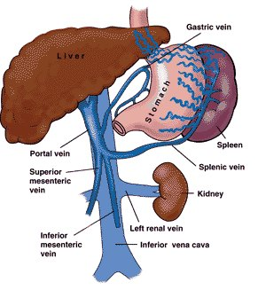
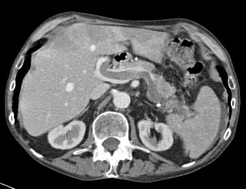
He walked this backwards and forwards and said explicitly it is something he has seen on examinations. It is also the question he was proudest of — “that’s where I got Ross”, the only time he stumped a colleague he considered brilliant.
His summary line: “Splenic vein thrombosis is more than just a big spleen. It has hematological concerns and problems that go with it.”
A practical habit he taught: when you obtain a CT for pancreatitis, do not look only at the pancreas — look at the spleen too. A large spleen flags rupture risk from the raised pressure gradient. He estimated roughly 20–25% of pancreatitis patients develop some splenic problem.
One diagnostic nuance: pancreatitis patients usually run a high white count while they are merely sick; a FALLING white count is the ominous sign, typically marking the onset of sepsis.
Because the splenic vein is where gastric veins drain, splenic vein thrombosis produces gastric varices and therefore gastrointestinal bleeding. His instruction: when you meet a gastrointestinal bleeder, look at the history for portal vein problems, and for cirrhosis as “the next tier up” blocking the portal drainage system. Isolated gastric varices with normal liver function should make you think specifically of splenic vein thrombosis, which is surgically curable — unlike variceal bleeding from cirrhotic portal hypertension.
| Study | What it shows |
|---|---|
| Peripheral blood smear | Decreased RBCs, WBCs or platelets, or abnormal RBC morphology. Reticulocytosis is seen secondary to increased RBC turnover |
| Bone marrow biopsy | Increased hematopoietic progenitor cells — the marrow is compensating |
| Ultrasound | Usually the first choice in trauma. Assesses size and texture of the spleen and perisplenic fluid |
| CT scan | Size, structural abnormalities, and pathology such as lymphadenopathy or varices |
| Nuclear imaging | Locating ACCESSORY SPLENIC TISSUE — critical when disease recurs after splenectomy |
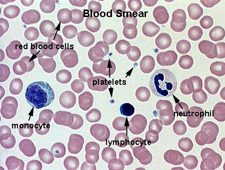
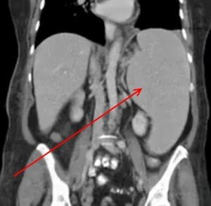
Q: A 48-year-old with a 3-year history of chronic alcoholic pancreatitis presents with hematemesis. Endoscopy shows isolated gastric varices with no esophageal varices. Liver function tests are normal. Hemoglobin 9.4 g/dL, WBC 3,100/mm3, platelets 84,000/mm3, spleen 18 cm. What is the diagnosis and the definitive treatment?
Splenic vein thrombosis secondary to pancreatitis. The chain: pancreatic inflammation → thrombosis of the low-pressure splenic vein running behind the pancreas → congestive splenomegaly → hypersplenism with pancytopenia, and separately gastric varices because gastric veins drain into the splenic vein. Isolated gastric varices with NORMAL liver function is the discriminator from cirrhotic portal hypertension, which causes esophageal varices too. Splenectomy is CURATIVE.
Q: A patient with cirrhosis and portal hypertension has a 20 cm spleen with pancytopenia. Should the spleen be removed?
Generally no. Portal hypertension is the most common cause of secondary hypersplenism, and splenectomy is generally not indicated because the spleen is a bystander — the obstruction is upstream and persists after removal. Contrast with splenic vein thrombosis, where splenectomy IS curative because removing the spleen eliminates the obstructed segment. The one situation prompting reconsideration is a spleen so large that capsular pain and rupture risk dominate.
Q: Why is a rising white cell count reassuring, but a falling white cell count alarming, in severe pancreatitis?
Patients with pancreatitis usually maintain a good white count while they are merely sick — it reflects an intact inflammatory response. A falling white count typically marks the onset of sepsis, when the marrow can no longer keep pace with consumption. In this population it may also reflect developing hypersplenism from splenic vein thrombosis, which lowers all three cell lines.
The spleen
“When you’re studying this for the boards, make a list of what are the diseases that splenectomy can CURE, and what are the diseases that splenectomy is sort of like PALLIATIVE — it doesn’t help. And you’re gonna find that there’s a very short list of splenectomy actually being something that can be a cure.”
That list is built for you below. Learn the cure column first — it is short, and it is the discriminating knowledge.
| Disease | Mechanism / key features | Role of splenectomy |
|---|---|---|
| Splenic vein thrombosis | Pancreatitis → thrombosis → hypersplenism + gastric varices | CURATIVE |
| Hereditary spherocytosis | Autosomal dominant dysfunction or deficiency of SPECTRIN, an RBC cytoskeletal protein → fragile RBCs lyse → spleen clears them and enlarges. Jaundice and splenomegaly from RBC lysis; gallstones and biliary colic from bilirubin stones. Diagnosis: anemia, elevated bilirubin, elevated reticulocyte count, SPHEROCYTES on smear | CURATIVE — but delay until after age 4 if possible, to avoid septic complications |
| Hereditary elliptocytosis | Autosomal dominant; involves spectrin and other RBC cytoskeletal proteins. Related to and managed like spherocytosis but LESS SEVERE | As for spherocytosis |
| Echinococcal cyst of the spleen | Parasitic cyst | CURATIVE (see Topic 10 — do not spill) |
| ITP — immune thrombocytopenic purpura | Autoimmune platelet destruction. Acute form: more common in children after viral upper respiratory illness; 80% recover spontaneously. Chronic form: most common in adults and women. Unexplained ecchymoses or petechiae; splenomegaly is RARE. Diagnosis: platelets under 100,000 with megakaryocytes in marrow. Only 20% have a sustained response to corticosteroids | Indicated if refractory to medical therapy, or with intracranial hemorrhage. Sustained remission in 75–85% |
| Autoimmune hemolytic anemia (idiopathic) | Autoantibody against RBC membrane proteins. More common in women. Jaundice, anemia. Positive DIRECT COOMBS test, reticulocytosis, increased indirect bilirubin | Mainstay is high-dose corticosteroids (75% respond). Splenectomy helps up to 80% of those refractory to medical therapy |
| Sickle cell anemia | Glutamic acid → valine at the 6th amino acid position of the beta chain. Cell deformity under low oxygen → sequestration → infarction and splenomegaly | Reserved for massive splenomegaly during sequestration crisis early in life; primarily medical management |
| Thalassemia major | Defective hemoglobin synthesis → severe anemia and hepatosplenomegaly | Generally NOT curative; may reduce transfusion requirement |
| Enzyme deficiencies — G6PD, pyruvate kinase | Congenital hemolytic anemias | Generally NOT curative; may reduce transfusions |
| TTP — thrombotic thrombocytopenic purpura | Rapidly progressive and usually fatal. Thrombocytopenia, microangiopathic hemolytic anemia, neurologic complications. Presents with fever, petechiae, hemolytic anemia, neurologic symptoms and renal failure. Smear: schistocytes, nucleated RBCs, basophilic stippling | PLASMA EXCHANGE is first-line. Splenectomy reserved for relapse or requiring multiple plasma exchanges. Prognosis poor (long-term survival under 10%) |
| Felty syndrome | Complication of long-standing rheumatoid arthritis: the triad of rheumatoid arthritis + splenomegaly + neutropenia. Recurrent infections and chronic leg ulcers | Performed for symptomatic neutropenia, anemia requiring transfusion, or severe thrombocytopenia |
| Gaucher disease | Lysosomal storage disease | Unusual indication |
| Portal hypertension | Most common cause of secondary hypersplenism | Generally NOT indicated |
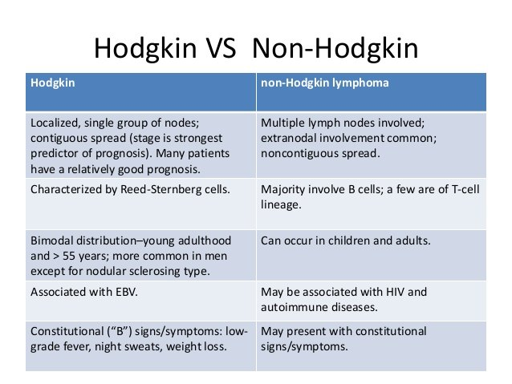
He flagged both as things “you probably need to know about,” and they are constructed to be confused.
Autoimmune platelet destruction; the spleen is chewing up the platelets.
First-line medical: platelet transfusion, gamma-immunoglobulin, corticosteroids, Rho(D) immunoglobulin. After splenectomy failure: rituximab and romiplostim.
Splenectomy: refractory disease or intracranial hemorrhage → sustained remission in 75–85%.
His mnemonic: “ITP has an I in it — I for INCISION.” He admitted it took him about 20 years to come up with.
Not primarily a splenic problem — a microangiopathy.
First-line: PLASMA EXCHANGE (plasmapheresis).
Splenectomy is a bailout only: relapse, or requiring multiple plasma exchanges.
Diagnosis is confirmed on the peripheral smear — schistocytes, nucleated RBCs, basophilic stippling.
The one-line discriminator: ITP → Incision (if refractory). TTP → plasma exchange first, surgery almost never.
Accessory spleens occur in 20% of people and ARE FUNCTIONAL (slide 45). Over 80% are located near the splenic hilum.
The consequence, stated on the slide: “If accessory spleens are present but not found and removed at surgery, diseases such as ITP will RECUR.”
The practical rule he gave: you DO chase accessory spleens when operating for an autoimmune or hematologic disease — because leaving one behind means the disease comes back. You do NOT chase them when operating for something else, such as trauma, where they serve no harm and may even preserve some splenic function. Nuclear imaging is the modality for locating accessory splenic tissue when disease recurs.
Note: in the Zoom session he said accessory spleens “usually are not functional.” The slide and standard teaching say they are functional — which is the only reason removing them matters. See Conflicts in the Source Material.
Beyond the classic lists, he described taking out a large spleen as a risk-reduction measure in a patient who will require lifelong anticoagulation. The logic: a large, friable spleen plus lifelong warfarin or a direct oral anticoagulant, in an elderly patient who falls, is a recipe for catastrophic splenic hemorrhage. “Be aware that might be another indication — risk-benefit — when people have large spleens, we may actually take them out in order to protect them from the potential problems.”
Q: A 9-year-old has jaundice, splenomegaly, anemia, elevated reticulocyte count and spherocytes on smear. Her father had a splenectomy as a young adult. What is the diagnosis, the defective protein, and what curative procedure is considered — with what timing caveat?
Hereditary spherocytosis, an autosomal dominant dysfunction or deficiency of SPECTRIN, an RBC cytoskeletal protein. Fragile red cells lyse, the spleen clears them and enlarges. Watch for bilirubin gallstones and biliary colic. Splenectomy is CURATIVE — one of the few genuinely curative indications — but should be delayed until after age 4 where possible to avoid septic complications, since splenic immune function matters most in young children. At 9 she is past that threshold.
Q: A 34-year-old woman has fever, petechiae, confusion, renal failure and anemia. Platelets 18,000/mm3; smear shows schistocytes and nucleated red cells. What is the diagnosis and first-line treatment?
TTP. The pentad is fever, petechiae, hemolytic anemia, neurologic symptoms and renal failure, with thrombocytopenia and microangiopathic hemolytic anemia; the smear showing schistocytes, nucleated RBCs and basophilic stippling confirms it. First-line is PLASMA EXCHANGE (plasmapheresis) — NOT splenectomy, which is reserved for relapse or patients requiring multiple exchanges. The disease is rapidly progressive and usually fatal, with long-term survival under 10%.
Q: Six months after splenectomy for ITP, a patient’s platelet count falls again. What is the most likely explanation and how is it confirmed?
A retained ACCESSORY SPLEEN. They occur in 20% of people, are functional, and over 80% lie near the splenic hilum. If not found and removed at the original operation, ITP recurs — which is why accessory spleens are actively sought when operating for autoimmune or hematologic disease. Confirm with nuclear imaging, the modality specifically used to locate accessory splenic tissue.
Q: A patient with long-standing rheumatoid arthritis has splenomegaly, a neutrophil count of 600/mm3, and recurrent infections with chronic leg ulcers. Name the syndrome and its triad.
Felty syndrome — a complication of long-standing rheumatoid arthritis. The triad is rheumatoid arthritis + splenomegaly + neutropenia, with recurrent infections and chronic leg ulcers. Splenectomy is performed for symptomatic neutropenia, anemia requiring transfusion, or severe thrombocytopenia.
The spleen
Etiology: may be idiopathic or induced by trauma.
Surgery is indicated ONLY for symptoms such as pain or mass effect. Cysts in themselves are not a problem.
Treatment: partial splenectomy or cyst marsupialization whenever possible, to PRESERVE SPLENIC FUNCTION.
A multisystem inflammatory disease of unknown etiology characterized by noncaseating granulomas in multiple tissues, especially lungs and lymph nodes.
Splenectomy typically only indicated to RULE OUT CANCER — a diagnostic, not therapeutic, indication.
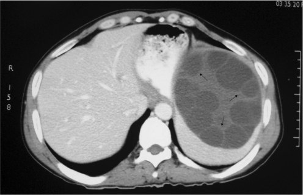
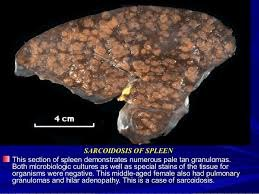
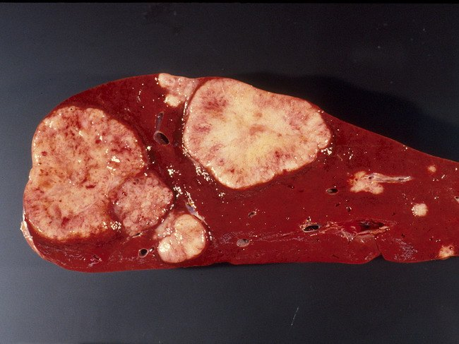
Mortality 40–100%.
Most common organisms: Staphylococcus aureus or Streptococcus.
Routes: infarction with necrosis and superinfection · intra-abdominal infection from another source · hematogenous seeding, as in intravenous drug users or during overwhelming bacteremia such as endocarditis.
Diagnosis: clinical evidence of sepsis together with CT findings suggestive of splenic abscess.
His radiologic pearl: AIR IN A SOLID ORGAN means a bad — likely anaerobic — infection. “If you see air in solid organs, that’s a bad infection. You need to go take care of it.”
Treatment: broad-spectrum antibiotics. Splenectomy has been the gold standard for refractory cases, but percutaneous drainage is increasingly a viable option. His practice: take the spleen out trying not to rupture it, culture it, then give directed antibiotic therapy.
May cause transient splenomegaly and hypersplenism.
May cause splenomegaly. An echinococcal cyst may develop in the spleen — partial or total splenectomy is curative.
Produces characteristic areas of CALCIFICATION within the spleen.
Do not spill the cyst. Spillage into the abdominal cavity disseminates echinococcus everywhere. He noted he has never seen one personally — it turns up in those doing missionary and overseas work.
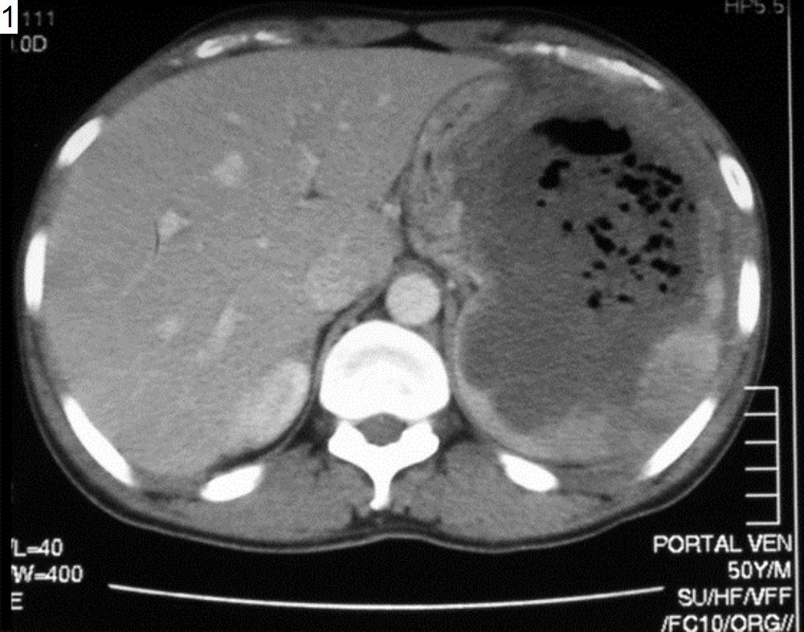
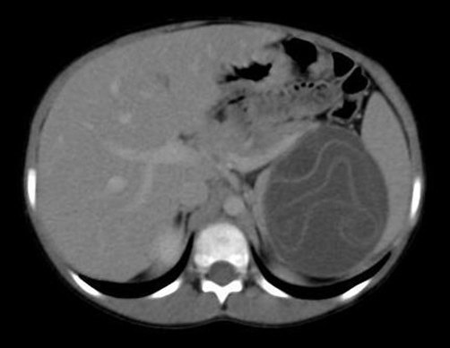
He described taking out the spleen of a boy last autumn: the primary care physician had correctly diagnosed mononucleosis and written a good note. The child was out of school — so he went skateboarding. “He had a big soft spleen, went skateboarding, he had mono, and he doesn’t have a spleen anymore.”
The teaching point: mononucleosis produces a large, SOFT, friable spleen — like the big soft spleens of portal hypertension — that ruptures with minimal trauma. Activity restriction is not a formality. And the consequence is lifelong: this child now needs vaccination and lifelong awareness of overwhelming post-splenectomy sepsis.
| Entity | Key facts |
|---|---|
| Splenic rupture | Traumatic, or SPONTANEOUS because of massive splenomegaly due to an associated disease |
| Splenosis | Splenic tissue growing in the abdominal cavity following rupture or removal (omental). Occurs spontaneously after rupture — and is why spillage must be avoided at laparoscopic splenectomy |
| Splenic artery aneurysm | A recognized entity — and, per his Q&A, a cause of obstetric hemorrhagic emergency (see below) |
| Ectopic spleen | Splenic location can vary |
| Accessory spleens | Present in 20% of the population; over 80% located near the splenic hilum |
| Iatrogenic trauma | The operating room accounts for 20% of ALL splenectomies |
| Blunt trauma | The leading cause of splenectomy. Note that traumatic splenic injury can often be managed NONOPERATIVELY |
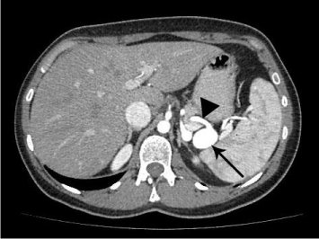
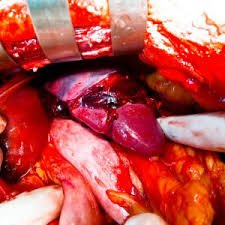
Asked in the Q&A about obstetric emergencies, he named ruptured splenic artery aneurysm alongside disseminated intravascular coagulation. “If you get that phone call to come upstairs, you want to be thinking about — okay, we’re probably doing a laparotomy.” The point for your purposes: sudden hemodynamic collapse in a pregnant patient should put ruptured splenic artery aneurysm on the differential, not only obstetric causes.
Q: A 17-year-old with infectious mononucleosis collapses after a fall while skateboarding. He is hypotensive with left upper quadrant pain and left shoulder pain. What is the diagnosis and why was he predisposed?
Splenic rupture. Mononucleosis produces a large, soft, friable spleen that ruptures with minimal trauma — the same character as the big soft spleens of portal hypertension. Left shoulder pain is referred diaphragmatic irritation from hemoperitoneum (the spleen sits directly beneath the diaphragm). This is precisely why activity restriction in mononucleosis is a genuine medical instruction.
Q: A CT scan in a febrile intravenous drug user shows a splenic fluid collection containing gas. What does the gas signify and how is this managed?
Splenic abscess, and the gas indicates a severe, likely anaerobic infection — his rule was that air in a solid organ means a bad infection that must be dealt with. In an intravenous drug user the route is hematogenous seeding. Mortality is 40–100%; commonest organisms are Staphylococcus aureus or Streptococcus. Treat with broad-spectrum antibiotics plus splenectomy (traditional gold standard for refractory cases) or increasingly percutaneous drainage; culture the specimen and then give directed therapy.
Q: Why must the specimen be placed in a tear-resistant bag during laparoscopic splenectomy?
To prevent SPLENOSIS — splenic tissue seeding and growing within the abdominal cavity. Because that ectopic tissue is functional, splenosis can cause recurrence of the underlying disease the splenectomy was performed to treat, such as ITP. The technique is to place the spleen in a tear-resistant nylon bag, macerate it inside the bag, and remove it without spillage. The same principle — with far worse consequences — applies to echinococcal cysts.
Operating and aftermath
Slide 59 is titled Absolute and Relative Indications for Splenectomy. His framing of it: “There’s very few sort of absolutes. Most of them tend to be more of a RELATIVE indication for complications and/or failures of medical management.” He added: “Worth kind of just memorizing those absolutes.”
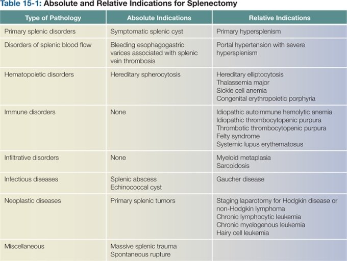
Note: the table above is the slide's own image, reproduced here since its text was not machine-extractable; the lists beside it are assembled from his spoken answer plus the disease-specific slides.
Open splenectomy may be performed through a midline laparotomy or a left subcostal incision. His strong preference: almost always a MIDLINE incision. A left flank or subcostal approach is reserved for elective pathological spleens; patients dislike it because the rectus muscle must be cut and it hurts as it heals.
In trauma, the sequence he described: make the midline incision, then pack all four quadrants with gauze, lift the omentum and mesentery and look for a ZONE ONE injury first. If there is a zone one (aortic) injury, nothing else matters — clamp the aorta, or open the chest and clamp the aorta or cava, then go to work. Only once zone one is excluded do you address the spleen.
Then, two accepted approaches to the spleen itself: some surgeons mobilize the colon and come down on the hilum; others “put my hand up there in the left upper quadrant and rip the spleen up”, tearing the ligaments and packing behind as they go — because those ‘avascular’ ligament planes bleed. Bringing the spleen up to the surface avoids operating down a deep hole.
Operative steps are similar to laparotomy, but care must be taken to avoid rupture and consequent SPLENOSIS. Sequence: trocar placement → vascular control → ligation of vessels → mobilization of ligamentous attachments → place in collection bag → maceration in the bag → removal.
Because splenosis can lead to recurrence of the underlying disease, surgeons must avoid spillage of any part of the splenic specimen; tear-resistant nylon bags are available.
Producing a PANCREATIC LEAK — the classic complication of blind hilar clamping.
Injury to short gastric vessels and GASTRIC WALL NECROSIS — because those vessels supply the fundus.
The splenic flexure lies anteriorly and is at risk during mobilization.
Inadequate hemostasis of the splenic pedicle or the short gastric vessels.
Usually accompanied by a LEFT PLEURAL EFFUSION — the diaphragm sits directly above.
Common after splenectomy, because the spleen normally sequesters and clears platelets. If the platelet count exceeds 1 million, begin ANTIPLATELET THERAPY.
Q: On postoperative day 5 after splenectomy, a patient has a platelet count of 1,150,000/mm3. What is the management?
Begin antiplatelet therapy. Thrombocytosis is a common post-splenectomy finding, because the spleen normally sequesters and clears platelets. The threshold given on the slide is a platelet count greater than 1 million, above which antiplatelet therapy is started to reduce thrombotic risk.
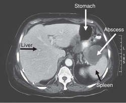
Q: On postoperative day 6 after splenectomy a patient has fever, left-sided pleuritic chest pain and a left pleural effusion. What complication should be suspected?
Subphrenic abscess, which is usually accompanied by a left pleural effusion because the collection sits immediately beneath the diaphragm in the space the spleen vacated. Distinguish from pancreatic leak (drain amylase, tail injury) and simple atelectasis. Diagnose by CT; manage with drainage and antibiotics.
Q: During an emergency laparotomy for blunt abdominal trauma with hemoperitoneum, what must be excluded before addressing the spleen?
A ZONE ONE injury — that is, an aortic or central retroperitoneal injury. His teaching: pack all four quadrants, lift the omentum and mesentery, and look for zone one first, because “if you got a zone one injury, nothing else matters.” Management is to clamp the aorta, or open the chest and clamp the aorta or cava, then proceed. Only after excluding zone one do you turn to the left upper quadrant.
Operating and aftermath
He introduced this section with: “This is a very important question. If you remember anything from me in the entire four years, please remember this. I can’t tell you how important this is, because I’ve watched people die before my very eyes, and there’s nothing I can do about it.”
A woman dropped her children at daycare with a mild runny nose. Feeling unwell, she went to her primary care office and waited. When they went to get her she was slumped in a chair, hypotensive, febrile, mottled. The ambulance brought her in hypotensive and tachycardic — “just dying right before your very eyes.”
Large-volume resuscitation was begun. Her skin began turning black from the periphery upward. Once lines were placed she bled from everywhere — gums, nose, the central line site. CT showed previous surgery and no spleen. Her husband arrived and confirmed a prior splenectomy — and that she had never received any vaccines.
She was dead at 3:30 that afternoon — roughly six and a half hours after dropping her children at daycare.
The mechanism: “The reason she was turning black before our eyes is she was hemorrhaging into all of her tissues. She basically went into massive DIC, septic shock.” He has seen a second, nearly identical case that took eight hours. Both died.
Etiology: the spleen is no longer able to opsonize encapsulated bacteria. Incidence is very rare — under 1%.
Causative organisms — the three named on the slide, all ENCAPSULATED:
Note: in the live session he initially said “four organisms”, and the class worked through it before he corrected himself: “Neisseria, Haemophilus, Strep pneumoniae. Yeah, maybe there’s three.” The slide says three; learn three for this exam. (For boards more broadly, the encapsulated list is longer — see Conflicts in the Source Material.)
Timing: most septic episodes occur within 2 years after splenectomy.
Risk is greatest if splenectomy occurs during the first 2–4 years of life — the reason spherocytosis splenectomy is delayed past age 4.
Nonspecific, mild, influenza-like symptoms, which can rapidly progress to high fever, shock, and death.
That first clause is the killer. The woman in his case had a runny nose. There is no reliable early warning: the presentation is indistinguishable from a trivial viral illness until it is unsurvivable. This is why the entire management strategy is PREVENTIVE.
Prognosis: in his 32 years he has seen two cases and both died. During the session the class looked up reported figures and found roughly 50–70% mortality, which he accepted as more accurate than his own impression. Treatment is supportive care and high-dose antibiotics — there is no specific therapy.
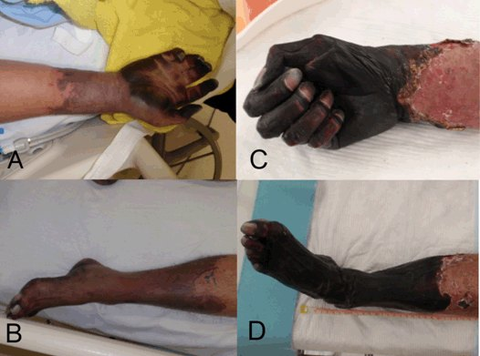
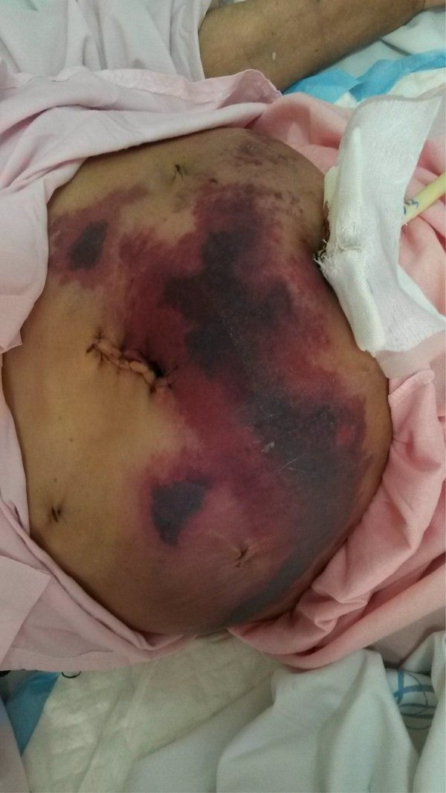
Vaccines should be administered 2 WEEKS PRIOR to elective splenectomy, while the immune system is intact and can mount a response.
Vaccination should be given PRIOR TO DISCHARGE. His nuance: give it when the patient is recovering and heading out the door, not while they are still sick or in hemorrhagic shock, because a downregulated immune system will not respond. Document it and ensure primary care follow-up.
A trivalent vaccine is commercially available: polyvalent pneumococcal, N. meningitidis, and H. influenzae. Available individually or as a combined dose.
Every 3 to 5 years at a minimum. He noted the debate between 3 and 5, and suggested more frequently (nearer 3) for patients who are unwell or chronically sick.
Initiate PENICILLIN therapy immediately. Do not wait for confirmation.
Whenever you learn a patient has no spleen — whatever they came in for — ask about their vaccination history. He directed this at every future physician in the room, joking only that radiologists might be exempt.
He placed responsibility explicitly on the primary care physician as well as the surgeon. The message for you: asplenia is a permanent, actionable diagnosis. It belongs on the problem list, the vaccination status belongs in the chart, and the revaccination interval belongs in the follow-up plan. As with inferior vena cava filter retrieval, the failure mode is not technical — it is a failure of follow-up.
Q: A 34-year-old who underwent splenectomy after a motor vehicle collision 14 months ago presents with 6 hours of fever, myalgias and a runny nose. She is now hypotensive and mottled with purpura. What is the diagnosis, mechanism, and immediate treatment?
Overwhelming post-splenectomy infection/sepsis (OPSI/OPSS). Mechanism: the spleen can no longer opsonize encapsulated bacteria — Streptococcus pneumoniae, Neisseria meningitidis, Haemophilus influenzae — and the major site of IgM production is gone. Note the timing: most episodes occur within 2 years of splenectomy. The purpura and mottling signal progression to DIC and septic shock. Initiate penicillin therapy immediately, plus aggressive supportive care and broad-spectrum antibiotics — treatment is otherwise only supportive, and mortality is roughly 50–70%.
Q: When should vaccines be given for an elective versus an emergency splenectomy, and why does the timing differ?
Elective: 2 weeks BEFORE the operation, while the immune system is intact and can mount an antibody response. Emergency/unplanned: before discharge — and specifically once the patient is recovering rather than acutely ill or in hemorrhagic shock, because a downregulated immune system will not generate an adequate response. Document the vaccination and arrange primary care follow-up, with revaccination every 3–5 years.
Q: Why is splenectomy for hereditary spherocytosis delayed until after age 4 when possible?
Because the risk of overwhelming post-splenectomy sepsis is greatest when splenectomy occurs during the first 2–4 years of life. Splenic immune function — clearing encapsulated organisms and producing IgM — matters most in early childhood, before the child has developed an adequate independent antibody repertoire. Delaying past age 4 lets that repertoire mature while accepting a few more years of hemolysis.
Reference
Six places where the slides, the recorded lecture and the live Q&A disagree, or where a spoken statement does not match standard usage. These are collected here rather than buried, because at least one of them would cost you a board question. This is not criticism of the lecturer — much of it is the ordinary imprecision of speaking without notes, and in several cases he corrected himself in real time.
What was said: “These are passive vaccines. Passive vaccines means your body has to be able to create the antibodies... An active vaccine, you’re actually giving them the antibodies.”
Standard usage is the exact opposite:
Critically, the clinical point he was making is entirely correct and does not depend on the labels: a vaccine requires a functioning immune system to respond to it, so you should not give it to a patient who is acutely ill, septic, or in hemorrhagic shock — wait until they are recovering. Learn the reasoning; use the standard definitions.
He said four, the class worked through them, and he then revised to three. The slide lists three: Streptococcus pneumoniae, Neisseria meningitidis, Haemophilus influenzae. Answer three for this course.
For boards more broadly, the encapsulated organism list is longer and is worth knowing: add Klebsiella pneumoniae, group B Streptococcus, Escherichia coli, Salmonella typhi, Pseudomonas aeruginosa, and Cryptococcus neoformans. A student in the session suggested Salmonella, which is a legitimate member of the wider list. The three vaccine-preventable ones are what matter after splenectomy.
Zoom session: “Accessory spleens usually are not functional, usually.” Slide 45: “Accessory spleens occur in 20% of people and ARE functional.”
Follow the slide. Their being functional is the entire reason they matter — it is why ITP recurs if one is left behind, and why they are hunted at operation for hematologic disease and localized with nuclear imaging afterwards. Note that his practical instruction was correct regardless: chase them in autoimmune/hematologic disease, don’t chase them in trauma.
In the closing summary he said “if you have the Peyer’s patches, they’re going to produce, I think it was primarily IgG.” That contradicts both the slide and his own extended teaching earlier in the same lecture.
Correct: Peyer’s patches → predominantly IgA (“mucosal antiseptic paint”). Tonsils → predominantly IgG, less IgE. The IgA answer is the one he drilled hardest and the one the board question turns on.
Recorded lecture: “rare, more commonly affecting men than women.” Slide 37: “rare, more commonly affects women.” Follow the slide: women.
He described opsonization as “breaking down the capsule so that the antibiotics can get in and kill the organism.” More precisely: opsonization COATS the organism with antibody and complement, TAGGING it for recognition and ingestion by phagocytes. It does not degrade the capsule, and it has nothing to do with antibiotic penetration.
The conclusion he drew from it is correct — no spleen → cannot opsonize → cannot clear encapsulated organisms → overwhelming sepsis — but state the mechanism properly on an exam.
Neither transcript is a reliable source for spelling. Beyond those already noted, watch for: “spleen colic” → splenocolic, “sequel” → cecal, “Kyle Ab” → chylous ascites, “ayo coccal” → echinococcal, “I G MS” → IgM, “pyre’s patches” → Peyer’s patches, “molt/gault/bolt” → MALT/GALT/BALT, “spleen aya” → splenomegaly, and “Carposi” → Kaposi. All are corrected throughout this file.
Reference
Every abbreviation and technical term used anywhere in this file, spelled out and defined, grouped by theme.
David L. Ciraulo, DO, FACS, MPH · UNE COM · lymphatics & lymphedema · lymphoid organs · the spleen & splenectomy
| Disease | Mechanism / key features | Diagnostic clue | First-line treatment | Role of splenectomy |
|---|---|---|---|---|
| Splenic vein thrombosis | Pancreatitis compresses the vein behind the pancreas | Isolated gastric varices, NORMAL liver function, pancytopenia | Treat pancreatitis | CURATIVE |
| Portal hypertension | #1 cause of secondary hypersplenism; congestion | Cirrhosis, esophageal + gastric varices | Manage portal hypertension | Generally NOT indicated |
| Hereditary spherocytosis | AD; SPECTRIN deficiency → fragile RBCs | Spherocytes, jaundice, ↑retic, bilirubin gallstones | Supportive | CURATIVE — delay past age 4 |
| Hereditary elliptocytosis | AD; spectrin and other cytoskeletal proteins | Elliptocytes; less severe | Supportive | As for spherocytosis |
| ITP | Autoimmune platelet destruction | Platelets <100,000, megakaryocytes in marrow; splenomegaly RARE | Steroids, IVIG, Rho(D), platelets | Refractory or ICH → remission 75–85% |
| TTP | Microangiopathy | Schistocytes, nucleated RBCs, basophilic stippling; fever, neuro, renal failure | PLASMA EXCHANGE | Bailout only; survival <10% |
| Autoimmune hemolytic anemia | Autoantibody vs RBC membrane; more common in women | Positive direct Coombs, ↑indirect bilirubin | High-dose steroids (75% respond) | Helps up to 80% of refractory |
| Sickle cell anemia | Glutamic acid → valine, 6th position, beta chain | Sequestration, infarction, splenomegaly | Medical management | Massive splenomegaly / sequestration crisis only |
| Thalassemia major | Defective hemoglobin synthesis | Severe anemia, hepatosplenomegaly | Transfusion | Not curative; may reduce transfusions |
| Felty syndrome | Long-standing rheumatoid arthritis | RA + splenomegaly + neutropenia, leg ulcers | Treat RA | For symptomatic neutropenia / cytopenias |
| Splenic abscess | Infarction, intra-abdominal source, or hematogenous seeding | Sepsis + CT findings; GAS in the spleen. S. aureus / Streptococcus | Broad-spectrum antibiotics | Gold standard for refractory; percutaneous drainage increasingly used. Mortality 40–100% |
| Splenic cyst | Idiopathic or post-traumatic | Often incidental | Observe | Only for pain/mass effect; prefer partial or marsupialization |
| Echinococcal cyst | Parasitic (hydatid) | Cystic lesion, travel history | — | CURATIVE — never spill |
| Sarcoidosis | Noncaseating granulomas | Lung + lymph node involvement | Steroids | Only to rule out cancer |
| Mononucleosis | Viral; transient splenomegaly | Big SOFT friable spleen | Activity restriction | Only for rupture |
| Hodgkin / non-Hodgkin lymphoma | Malignant | — | Chemo ± radiation | Staging laparotomy rarely done; NHL for hypersplenism / massive splenomegaly |
| Trauma | Blunt trauma = leading cause of splenectomy | Left ribs 8–11 fracture + LUQ pain; ultrasound first | Often NONOPERATIVE | ABSOLUTE if hemorrhaging |